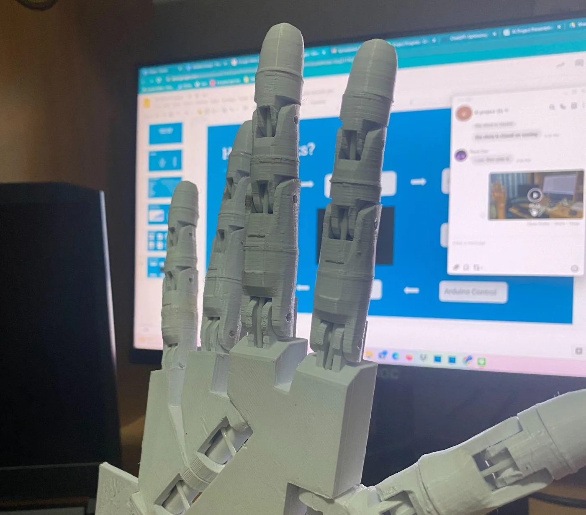
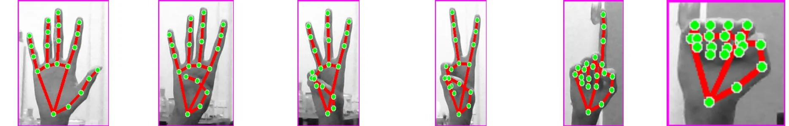
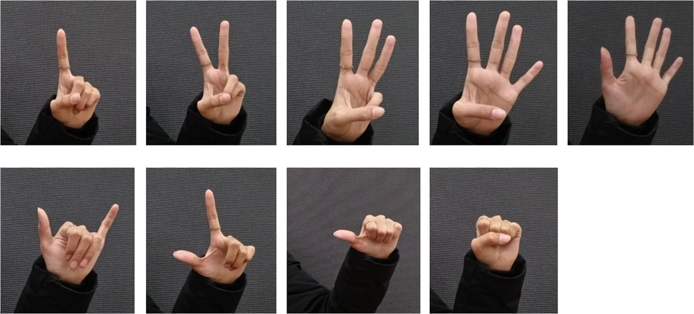
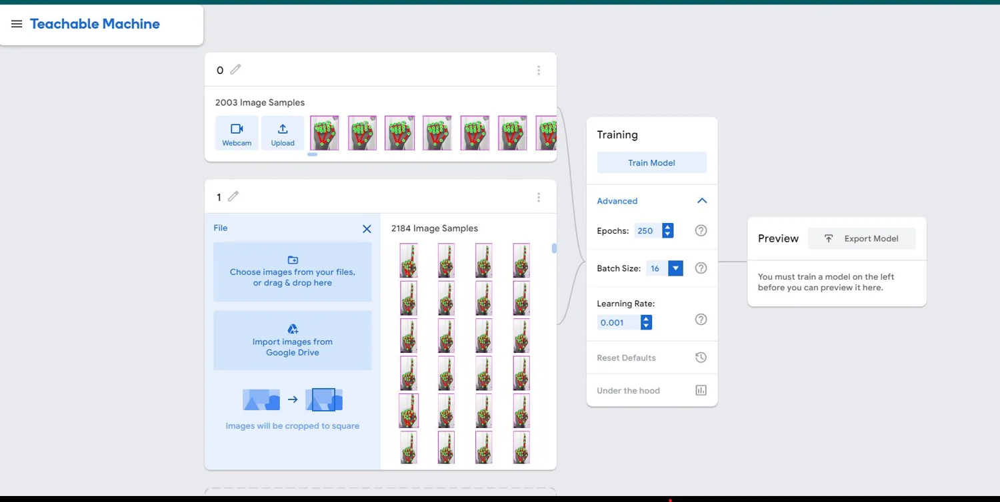
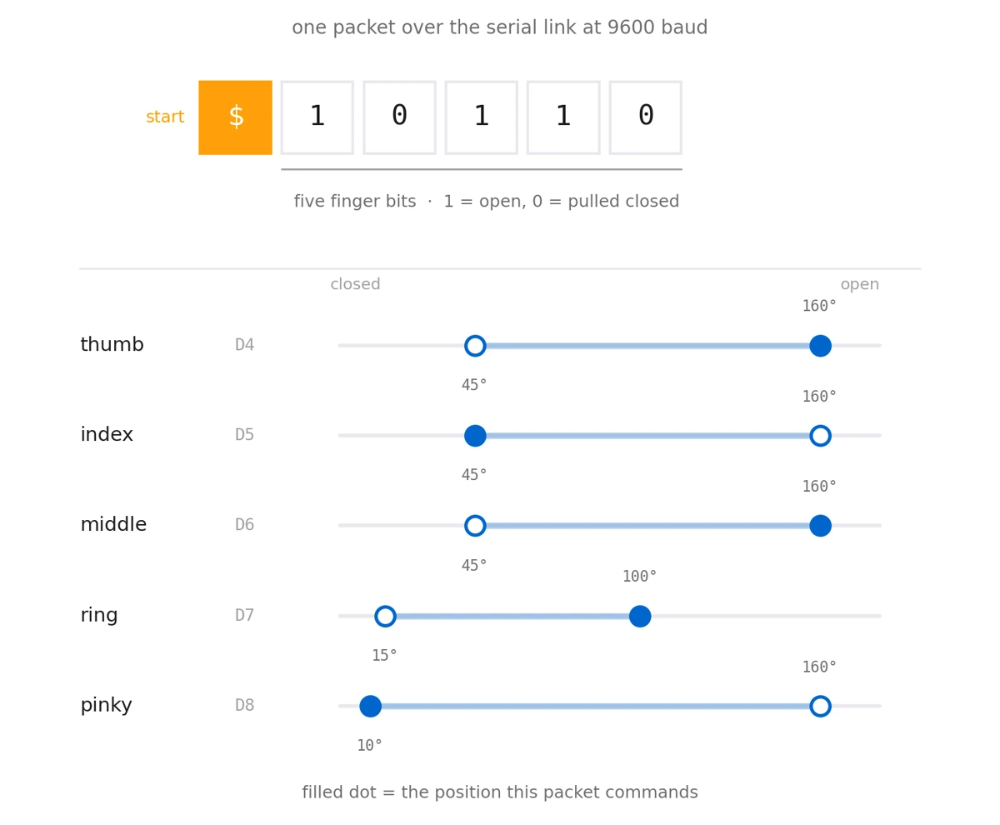
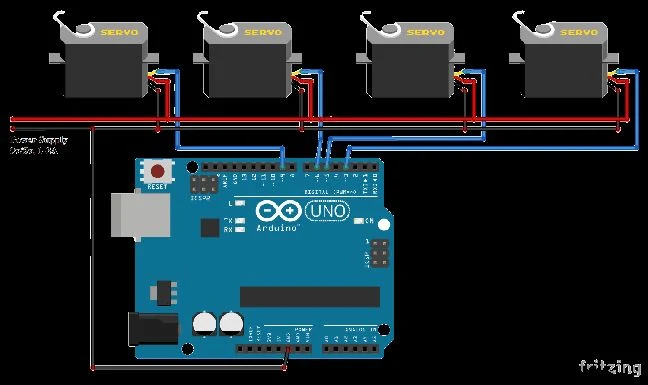
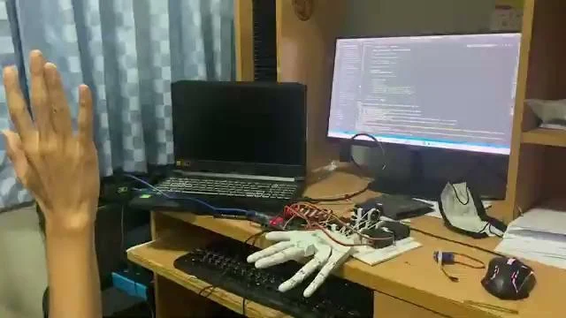

Hold up your hand and a printed one copies it — five fingers, thirty-two poses, over a serial link at 9600 baud.

The loop is short: a webcam frame goes to MediaPipe, MediaPipe returns the skeleton of the hand, five booleans come out of that skeleton, they cross a USB cable as six characters, and an Arduino drives five servos to match. Thirty milliseconds of that, over and over.
What makes the project interesting is that it contains two ways of recognising a gesture — a trained image classifier and a geometric rule — and only one of them ends up moving the hand. Working out why is most of the story.
Twenty-one points, and a comparison per finger.
MediaPipe returns 21 landmarks per hand — four joints per finger plus the wrist — in pixel coordinates. Once you have those, deciding whether a finger is up needs no learning at all, just a comparison: the fingertip against the joint two links down the chain. If the tip sits higher in the image than that joint, the finger is extended.
The thumb is the exception. It folds sideways rather than down, so it is judged on x instead of y — and the direction of that test flips depending on whether the hand is a left or a right. MediaPipe's own handedness label gets inverted first, because the webcam image is mirrored and the label describes the real hand, not the one on screen.
The output is five bits, one per finger, in the order thumb to pinky. That is the entire control signal.

Six classes cannot address thirty-two states.
Alongside the geometry there is a real trained classifier. Around 2,000 images per class were collected by holding poses in front of the webcam, each one cropped to the hand's bounding box with a 20-pixel margin and letterboxed onto a 300×300 white canvas so the aspect ratio survives the resize. Teachable Machine trained on them for 250 epochs at a batch size of 16, and the result was exported as a Keras model.


The model has six labels: 0 through 5. It answers how many fingers are up. But a hand with five independent servos has 2⁵ = 32 reachable poses, and "three fingers up" describes ten of them. The classifier simply cannot express the difference between a peace sign and a pinky-and-thumb.
So in the running program the classifier's prediction is drawn on screen with its confidence, and the landmark rule is what actually reaches the servos. The trained model became the visible read-out; the geometry became the controller. It is a nice illustration that the learned component is not automatically the right tool — here the hand-written rule is both more expressive and cheaper.
Six characters, framed so a half-packet can never move a finger.
The five bits go down a USB serial line at 9600 baud. The obvious way to send them — write five characters and hope — fails the moment a read lands mid-packet, because the Arduino has no way to know which finger the first digit belongs to.
So every packet opens with a $. The sketch reads one character at a time, ignores everything until it sees that marker, then buffers a fixed six characters before acting. Framing like this means a packet split across two reads, or a byte lost to noise, costs one dropped update rather than a hand that closes the wrong fingers. On the Python side, a failed write drops the serial object and opens a new one, so unplugging the cable mid-run reconnects instead of crashing.

On the Arduino each finger is an object holding a servo and its two end stops, with a single move() that takes a bit and writes one angle or the other. The limits are not shared, because the linkages are not identical: thumb, index and middle swing 45° to 160°, the ring finger only manages 15° to 100°, and the pinky runs 10° to 160°. Those numbers are tendon travel measured on the printed parts, not a design constant.

Printed in PLA, tendon-driven, five MG996R servos.
The hand is printed in PLA and went through a prototype design before the final one. Each finger is pulled closed by a line running to a servo in the forearm and returns when the servo releases — the same tendon arrangement most printed hands use, and the same place most of them lose accuracy.

Three failures worth writing down.
Current. Five MG996R servos stalling at once draw far more than a hobby supply or the driver board wants to give. Poses that moved several fingers together browned out the rail — the classic failure of counting servos by signal channels rather than by amps.
Serial drops. The link disconnected during testing, which is what pushed the reconnect logic and the framing marker into the code rather than leaving both as an afterthought.
Friction. Printed joints running on printed pins bind, and the tendons stretch. The result is a hand that reaches its two commanded angles but not smoothly, and the fix is mechanical rather than anything that can be done in software.
There was a perception failure too: two-finger poses were recognised least reliably. With the thumb judged on a different axis from the other four, the poses that mix an extended thumb with one extended finger sit closest to the decision boundary.
300×300$-framed six-character packets, auto-reconnect on write failureBuilt by a team of five as an AI mini project at King Mongkut's Institute of Technology Ladkrabang. The project slides are published here with my teammates' names and student numbers removed.